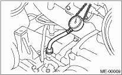

1. Remove the collector cover. (DOHC Turbo model)
2. Remove the oil pressure switch. 
3. Connect the oil pressure gauge hose to cylinder block.
4. Connect the battery ground cable to the battery.

5. Start the engine, and measure the oil pressure.

Oil pressure:
98 kPa (1.0 kgf/cm2, 14 psi) or more at 600 rpm
294 kPa (3.0 kgf/cm2, 43 psi) or more at 5,000 rpm
• If the oil pressure is out of specification, check the oil pump, oil filter and lubrication line.
• If the oil pressure warning light is turned on and oil pressure is within specification, check the oil pressure switch.
NOTE:
The specified data is based on an engine oil temperature of 80°C (176°F).
6. After measuring the oil pressure, install the oil pressure switch.
Tightening torque:
25 N·m (2.5 kgf-m, 18.1 ft-lb)